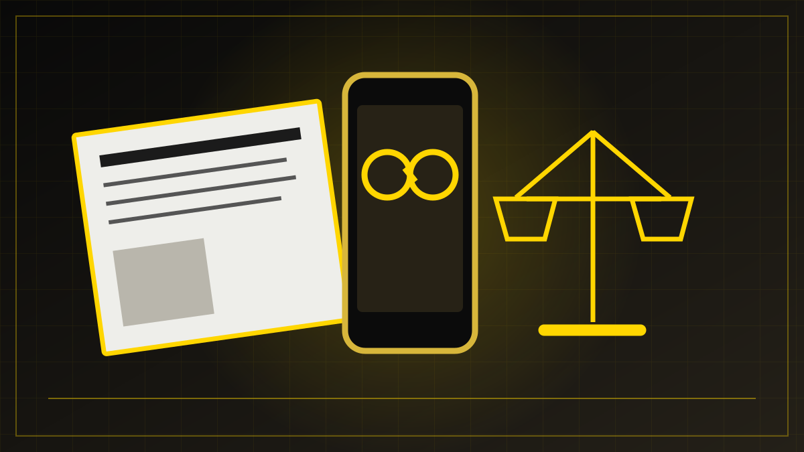
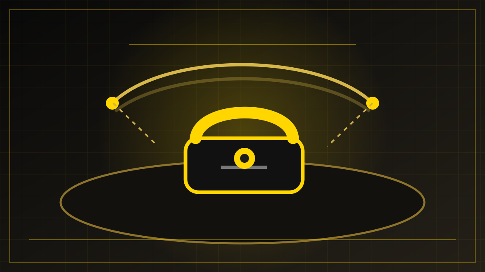
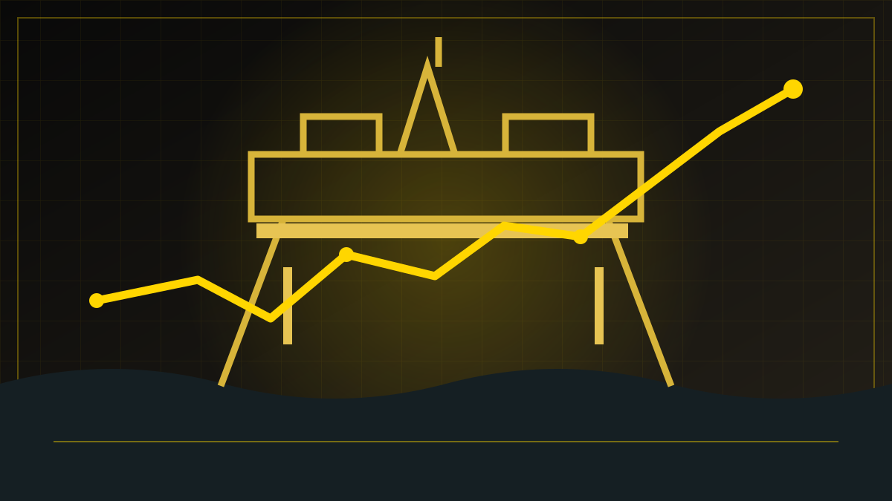
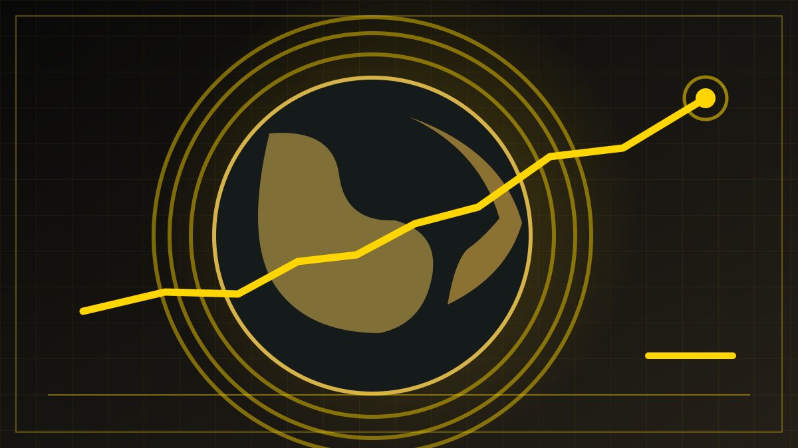

ARBEIDSMAPPE – IKKE PUBLISERT
Nyhetsutkast samlet 28. oktober
Fem kildelagte saker skrevet for redaksjonell gjennomgang. Bildene er originale grafiske illustrasjoner, ikke fotografier fra hendelsene. Sakene er foreløpig ikke lagt i nyhetshjulene.
Til den løpende artikkelkøen. Denne mappen viser tekster opprettet rundt 28. oktober, ikke en samlet avisutgave. Meta-saken ble senere oppdatert etter Oslo tingretts kjennelse.
Samfunnssikkerhet
NSM hever cyberrisikoen til høyt nivå

Medier og teknologi
Norske mediehus fikk medhold: Retten stanser Metas nye vilkår

Utenriks
Støre og Stubb ringte Putin om krigen i Ukraina

Økonomi
Høyere olje- og gasspriser løftet Equinors resultat

Klima og vitenskap
Klimagassene i atmosfæren nådde nye rekordnivåer
Redaksjonell standard: Kontrollér opplysningene mot oppdaterte kilder samme dag som saken publiseres. Skill faktastoff fra meninger. Gi reell anledning til samtidig imøtegåelse ved alvorlige beskyldninger. Ingen av artiklene hevder at redaksjonen har gjort egne intervjuer.